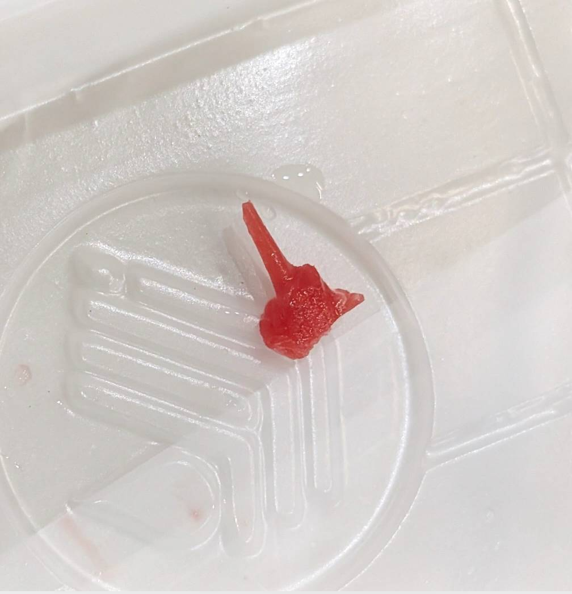

🟦 Insight 41 — ترتیب تراش در پست و کور: وقتی دسترسی، مسیر را تعیین میکند

📝 توضیح بالینی
تراش بهعنوان یک فرآیند پویا، نه یک توالی ثابت
- در آمادهسازی رزین برای پست و کور، معمولاً دو رویکرد ذهنی برای ترتیب تراش وجود دارد. در روشی که بسیاری از ما در دوران دندانپزشکی عمومی یاد گرفتیم، ابتدا ارتفاع تنظیم میشود و سپس دیوارهها و فرم محیطی کور شکل میگیرد.
- اما در رویکرد دیگری—که در بسیاری از موارد پروتز کاربردیتر به نظر میرسد—ابتدا دیوارهها و فرم محیطی تنظیم میشوند و کاهش ارتفاع به مرحله نهایی موکول میشود.
- واقعیت این است که هیچکدام ذاتاً «درستتر» نیستند. ترتیب تراش، بخشی از استراتژی دسترسی و کنترل میدان است؛ نه یک قانون مطلق.
- در بعضی شرایط، مخصوصاً زمانی که فضا محدود است یا دید مستقیم کافی وجود ندارد، کاهش اولیه ارتفاع میتواند فضای حرکتی، دید بهتر و دسترسی مناسبتری برای ادامه تراش ایجاد کند.
- گاهی حتی تراش یکی دو دیواره قبل از کاهش ارتفاع، مسیر مناسبتری برای ادامه کار فراهم میکند. در واقع اپراتور ممکن است حین کار، بسته به شرایط، مرتب بین این دو استراتژی جابهجا شود.
- این موضوع در دندانهایی مثل مولر سوم بالا، بهویژه در بیمارانی با محدودیت بازشدن دهان، اهمیت بیشتری پیدا میکند. در چنین شرایطی، تراش دیگر فقط «شکل دادن» نیست؛ بلکه نوعی مدیریت مرحلهای فضا است.
- گاهی درمانگر مجبور است بهصورت تدریجی و تاکتیکی، با حذف بخشی از ارتفاع یا اصلاح برخی دیوارهها، شرایط را برای ادامه درمان قابلدسترسیتر کند تا بتواند مرحلهبهمرحله میدان کار را بازتر کند.
- نکته مهم این است که ذهن درمانگر نباید به یک توالی ثابت محدود شود. گاهی بهترین ترتیب تراش، همان ترتیبی است که کنترل بهتر دست، دید و مسیر حرکت ابزار را فراهم میکند.
-
نکته کلیدی:
در بسیاری از تراشهای پروتزی، ترتیب مراحل از قبل تعیینشده نیست؛ بلکه حین کار و بر اساس دسترسی، دید، آناتومی و محدودیتهای بالینی شکل میگیرد. گاهی موفقیت درمان نه به «نوع تراش»، بلکه به توانایی ایجاد تدریجی فضا برای ادامه مسیر وابسته است.